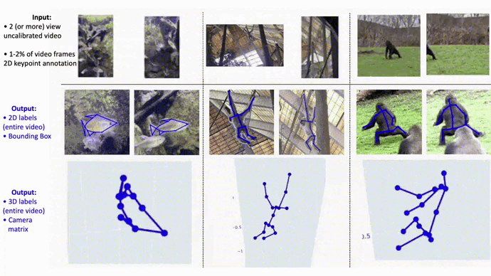
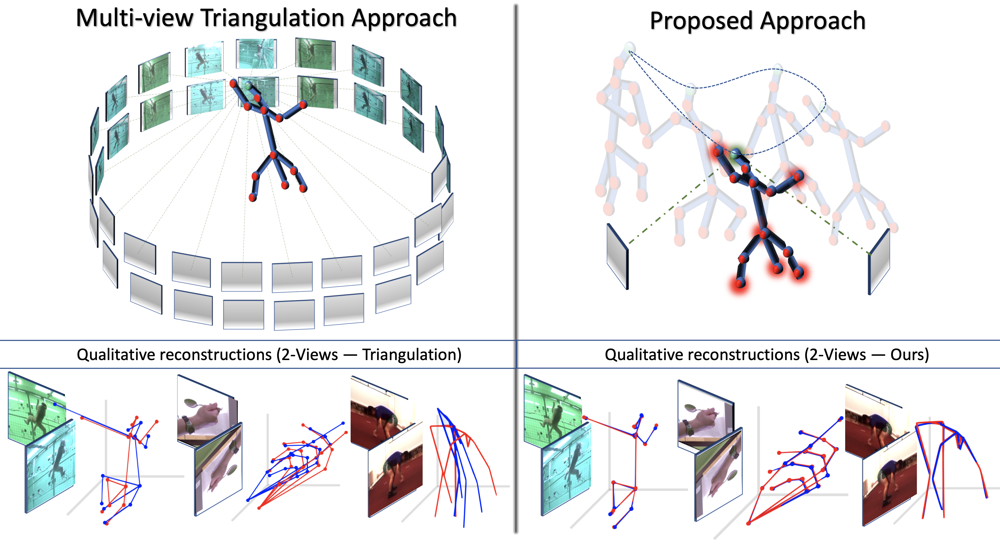
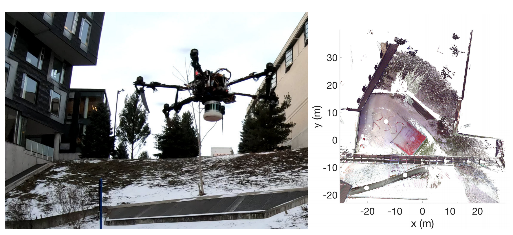
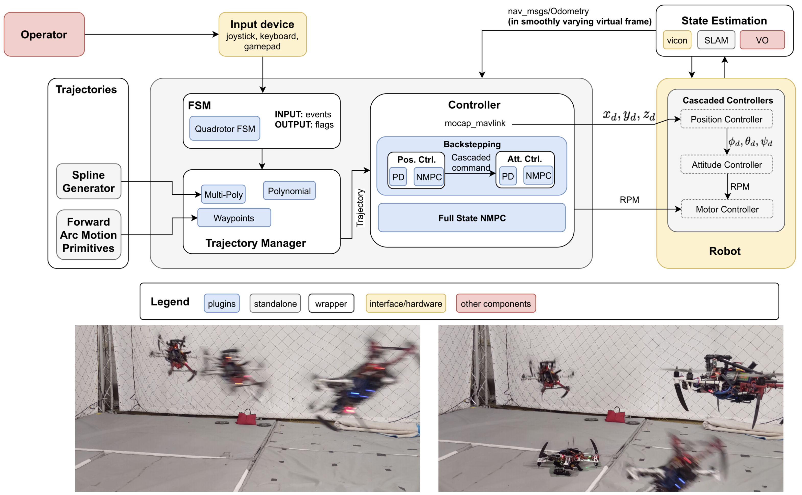
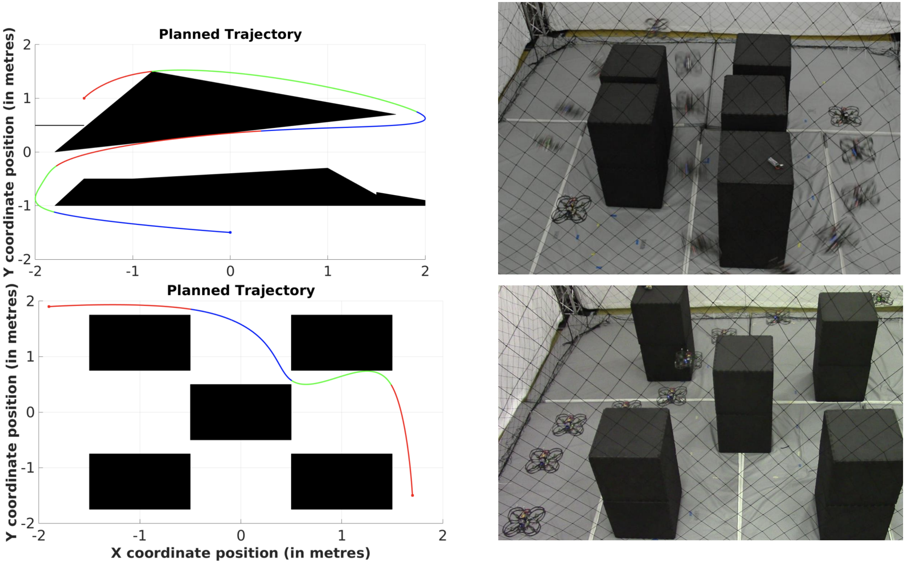
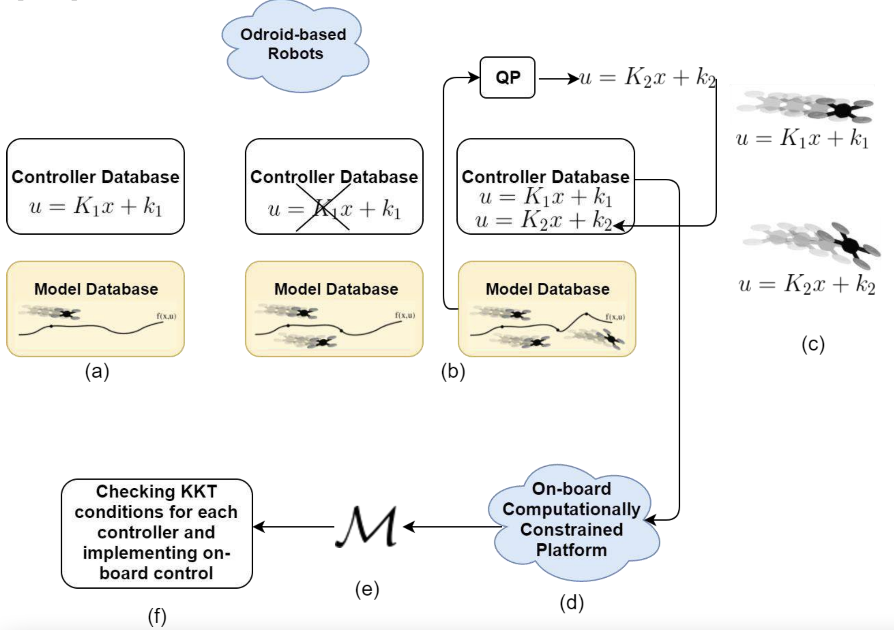

Bio
I am a PhD student at the Robotics Institute, Carnegie Mellon University (CMU) working with
Simon Lucey, and Laszlo Jeni at CI2CV Computer Vision Lab and Computational Behavior Lab. Previously, I finished my Masters at CMU under the guidance of Simon Lucey. Before that, I worked as a Research Assistant with Nathan Michael at Resilient Intelligent Systems Lab (RISLab).
Using my background in robotics, computer vision, and machine learning, I am interested in uncovering the causal reasoning behind every decision that we make that consistues
human intelligence. Unconvering such causal artifacts of biological intelligence could be the key to
developing artifically intelligent systems that can "think", "reason", and "imagine" for themselves.
Causal intelligence also holds the key to solve the problems of Out-of-distribution (O.O.D.) generalization, lifelong learning via abstraction,
and the problem of handling catastrophic forgetting, prevelant in modern machine learning methods. My goal is to create the intelligent mechanisms that have the potential to
advancing scientific discovery and understanding the fundamental mechanisms of life.
In my opinion: AI is not a field in itself, it is a way to express all the other scientific fields.
News
Sept. 2022
NeurIPS 2022: Excited to share the acceptance of our work in
NeurIPS 2022. TL;DR: This work generates 2D, 3D labels for computer vision tasks over data captured in the wild using uncalibrated cameras! We release a
zoo dataset as well as the corresponding codebase.
May 2022
Happy to share that I am rejoining Apple for third consecutive summer to advance the field of self-supervised and meta-learning.
Oct. 2021
3DV 2021: Our paper "High Fidelity 3D Reconstructions with Limited Physical Views" is accepted at
3DV 2021! Watch my
2 min. talk and
10 min. talks here.
Aug. 2021
I have accepted the offer to pursue Ph.D. at the Robotics Institute, Carnegie Mellon University.
May 2021
I will rejoin Ian Fasel's group at the Apple over the summer and continue working on deep learning for machine vision.
May 2020
I joined Apple as a Machine Learning Research Scientist Intern.
Publications

Multiview-bootstrapping in the Wild (MBW)
NeurIPS 2022
Mosam Dabhi, Chaoyang Wang, Tim Clifford, Laszlo Jeni, Ian Fasel, Simon Lucey
Keywords: Low-shot learning, O.O.D. detection
TLDR: This work generates 2D, 3D keypoint labels for data captured in the wild during a casual zoo visit! We release this zoo dataset!

High Fidelity 3D Reconstructions with Limited Physical Views
3DV 2021
Mosam Dabhi, Chaoyang Wang, Kunal Saluja, Laszlo Jeni, Ian Fasel, Simon Lucey
Keywords: Multi-view 2D to 3D, NRSfM
TLDR: This work generates 3D keypoint labels using 2D keypoints provided from just 2 uncalibrated cameras, compared to > 100 calibrated cameras!

Real-Time Information-Theoretic Exploration with Gaussian Mixture Model Maps
RSS 2019
Wennie Tabib, Kshitij Goel, John Yao, Mosam Dabhi, Curtis Boirum, Nathan Michael
Fast and Agile Vision-Based Flight with Teleoperation and Collision Avoidance on a Multirotor
ISER 2018
Alex Spitzer, Xuning Yang, John Yao, Aditya Dhawale, Kshitij Goel, Mosam Dabhi, Matt Collins, Curtis Boirum, Nathan Michael

Aggressive Flight Performance using Robust Experience-driven Predictive Control Strategies: Experimentation and Analysis
Technical Report, Robotics Institute Repository
Mosam Dabhi, Alex Spitzer, Nathan Michael

Planning Aggressive, Dynamically Feasible and Optimal Trajectories for Autonomous Vehicles in Cluttered Environments using Mixed Integer Programming
Robotics Institute Summer Scholars Poster Presentation 2016
Mosam Dabhi, Vishnu Desaraju, Nathan Michael

Implementation of Experience-driven Predictive Control on Computationally Constrained Platform
Robotics Institute Summer Scholars Poster Presentation 2017
Mosam Dabhi, Nathan Michael